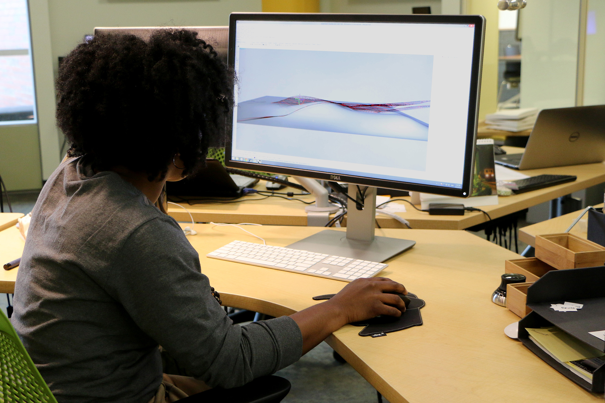
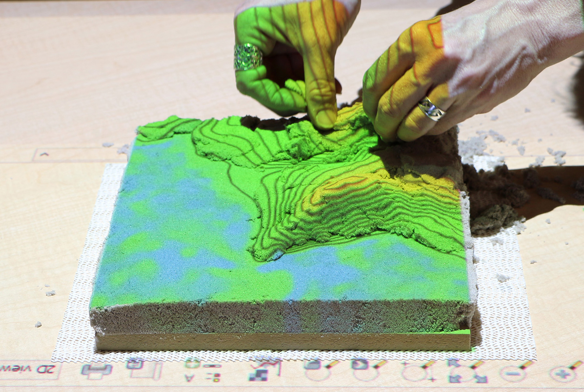
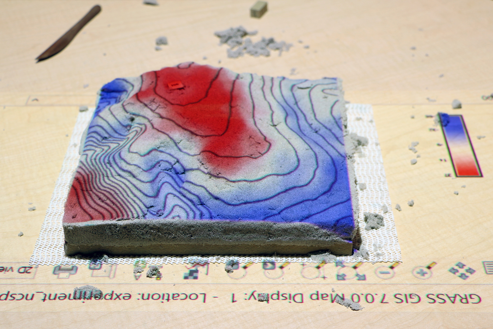
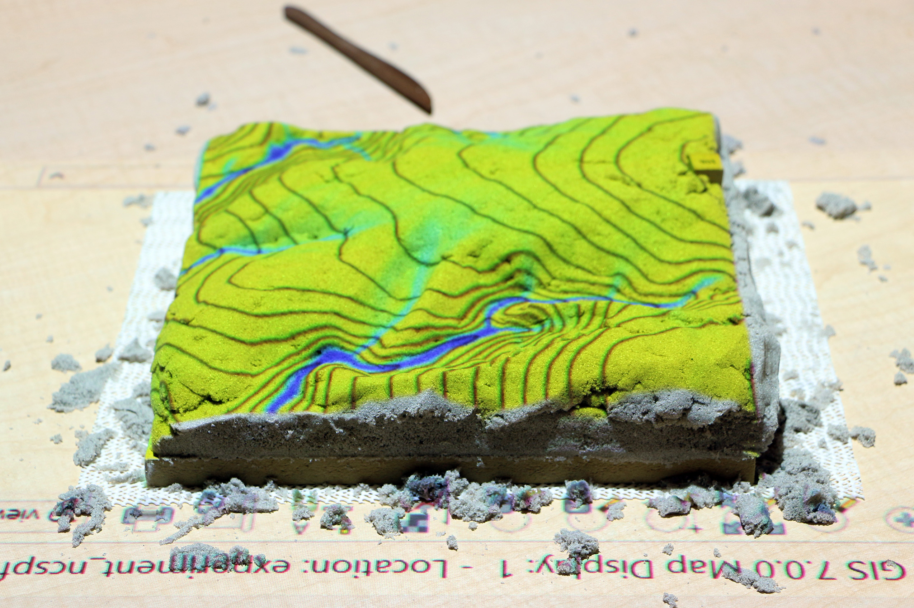

Embodied Spatial Thinking in Tangible Computing
A study of how analog, digital, and hybrid analog-digital technologies change the way we think about 3D space. In an experiment research subjects studied and modeled landforms by hand, in a 3D modeling program, and with Tangible Landscape.
Aim: To determine if there is an analog-digital divide in 3D spatial learning and how it can be bridged
Objective: To compare how well novice and expert landscape architects can model 3D space with analog, digital, and hybrid analog-digital technologies
Research questions
-

How well can novice and expert landscape architects model a given terrain with analog 3D modeling?
Testable hypothesis: Novices without training can accurately model a given terrain with digital 3D modeling
-

How well can novice and expert landscape architects model a given terrain with digital 3D modeling?
Testable hypothesis: Novices without training can accurately model a given terrain with analog 3D modeling
-

How well can novice and expert landscape architects model a given terrain with hybrid analog-digital 3D modeling?
Testable hypothesis: Novices without training can accurately model a given terrain with hybrid analog-digital 3D modeling
-

How well can novice and expert landscape architects connect changes in forms to changes in processes?
Testable hypothesis: Novices without training can accurately connect changes in form to changes in processes